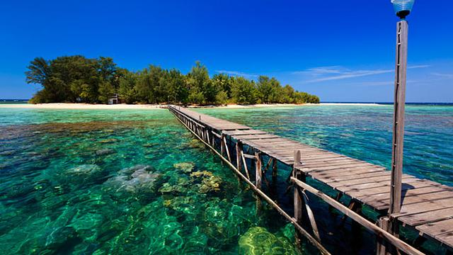
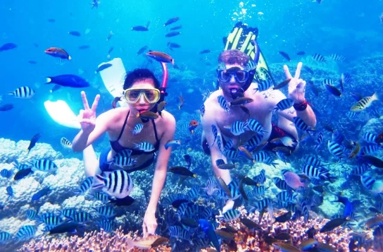

Tentang Karimun Jawa
Karimun jawa merupakan sebuah kepulawan yang terletak di lautan jawa indonesia dan biasa diketahui sebagai "Taman nasional Karimun Jawa" yang biasa digunakan untuk konserfasi untuk hutang mangrove, pantai, dan trumbu karang. Beberapa fauna juga tersedia dalam pulau ini diantaranya adalah penyu yang berhabitat di perairan sekitar pulau, lalu rusa dan trenggiling juga dapat di lihat berhabitat di dataran pulau. Karimun jawa juga memiliki beberapa situs untuk diving.
Terdapat berbagai layanan untuk situs menyelam yang tersedia di berbagai titik pada pulau, diantaranya adalah pulau menyawakan, manjangan kecil, cemara,pulau cilik dan pulau tengah.
